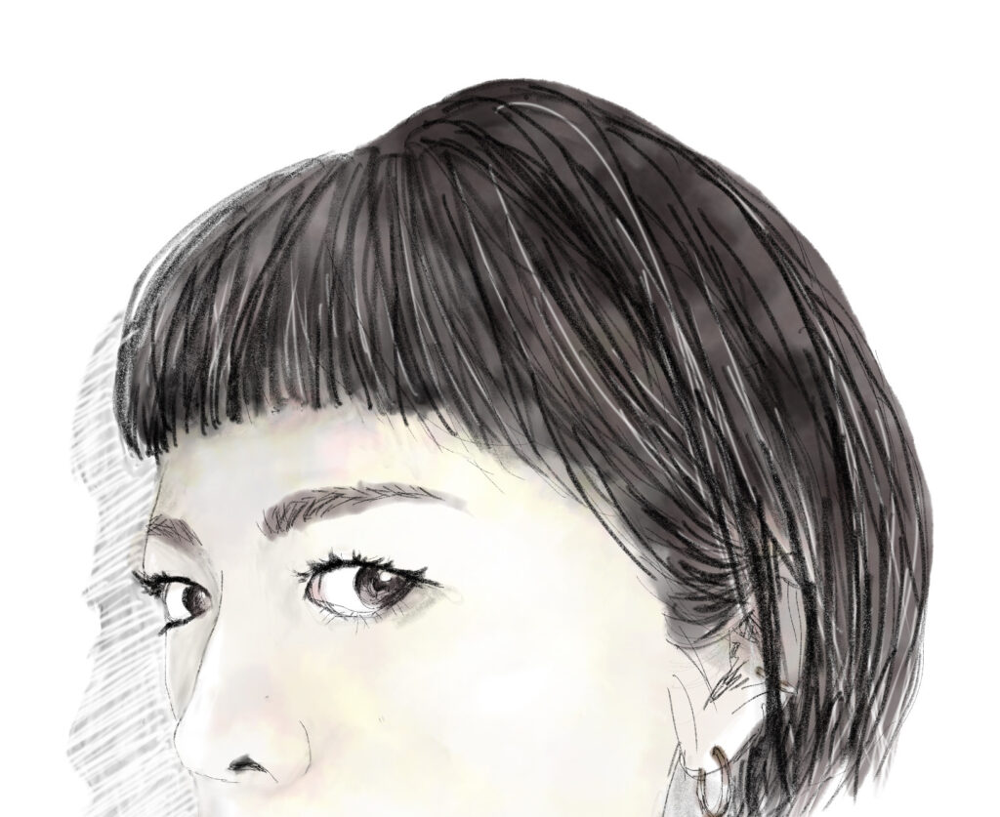

わたしのこと
ABOUT
さかさまでは、紙媒体／Webサイト／プロダクトなど、
媒体や規模を問わず、さまざまなクリエイティブのグラフィックデザインやディレクションを承っております。
さかさまにできること
-
グラフィックデザイン制作全般
-
原稿整理や構成案・ワイヤーフレーム作成、進行管理等のディレクション業務
-
ロゴ制作などCIやVI、コーポレートサイト制作やブランディング
-
Web制作や印刷、デザインにまつわる疑問の解決
-
デザインチームの育成やマネジメントについての相談
経験職種について
デザイン制作だけでなく、オウンドメディアの運営、SNSを含めたWebマーケティングなどにも従事。印刷会社や制作会社等のクライアントワークだけでなく、事業会社のインハウスデザイナー経験も長いため、校正・校閲はもちろん、俯瞰した視点でのクリエイティブディレクション、ブランディングが得意です。制作物としての枠にこだわらず、マーケティング戦略の視点からもご提案いたします。
経験業種について
アパレル、自動車関連、印刷関連、工業系図面、飲食系、ライフサービスなどさまざま。ユーザーの視点を大切に、ジャンルにとらわれない、偏らないクリエイティブ制作が可能です。
制作物について
Webサイト（LPやコーポレートサイト、サービスサイト等）をはじめ、動画（YouTube）、提案資料、ポスター、メニュー、カタログやチラシ等の紙媒体、販促ツールなど、様々な媒体の制作を経験してまいりました。イラストも描いたりします。（写実的なものからゆるいものまで…）

中学生の頃よりWeb制作をはじめる。制作過程を記録したブックレットとともに（今思えばエディトリアル、DTPもかじっていたのだった）。夏休みの自由研究である。高校生になり、授業で「色彩は秩序」という言葉を聞き感銘を受ける。当時はまだインターネットには際限があった。地方の狭い世界に絶望し、家を出た。パンクを聞いていた。営業等の経験を経たのち、印刷会社へ転職したことを機にいわゆる"クリエイティブ業界"へ足を踏み入れ、デザインに関わることが食い扶持となる（執念の転職三昧である）。デザイナーとしての経験は18年ほど。2020年よりフリーランスとなり、スタートアップや中小企業のプロジェクトに参画しつつ、大手企業のクリエイティブディレクションを担当。ブランディングやCRM、LPO施策など、デザインの視点から多岐にわたって業務を担う。デザインチームの運営にも多く関わってきており、業務改善や新人デザイナーの育成など、マネジメントにも長らく従事している。また、2016年より子ども食堂やフードバンクの支援活動などにも参加してきたが、現場の焼け石に水感に打ち込めされ、自身の経験も踏まえつつ対症療法的措置から教育の充実をはかる方向にシフトチェンジ。講師としての経験も活かしつつ若年層の指導やメンタリングを個人で行なっている。人間は文化を知り学ぶことで豊かになるはずだ。だからわたしは戻ってきた。
そのほか、フードバンクや子ども食堂の運営のお手伝いや、保護猫の支援活動などにも参加中。
「パソコンで仕事をしてみたい」など第一歩を踏み出すサポートから、個人事業のこと、フリーランスとしての生き方、クリエイターを生業にすることについてなどなど…自身の経験から、その方にとってよりベストな選択ができるようお話しすることも。
「わたしがごはんを食べるための仕事が、みんながごはんを食べるための仕事でもあったらいいな。」その夢を叶えるために事業にしてみることにしました。
漠然とした空想妄想みたいな話を、理想論で終わらせたくない。大人になっても夢をもっていていいと言える大人でいたいのです。
現在、中の人は生家の家業にも入り込んでおり、新規事業として考えていることと相性のよいフリースクール運営を検討中。都会にいるだけじゃあ、叶えられないことがありました。それは地元を離れたことがある人には理解いただける感覚なのではなかろうか。原点回帰。事業承継を通して、過去と現在、未来を見つめる。
子どもだけでなく、大人にとっても、当たり前を強要されないエアポケット的存在になりたいです。
お気軽にご相談ください
CONTACT →